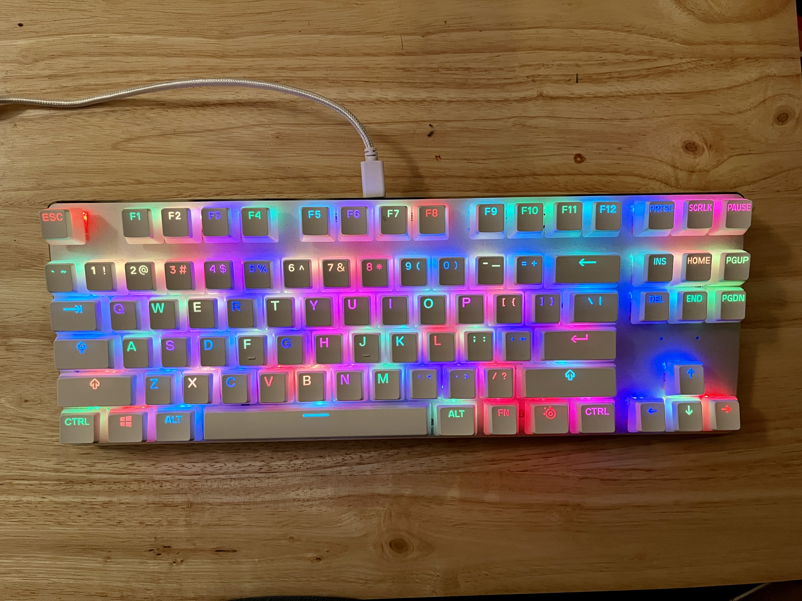

My first ever build!

This is my first ever mechanical keyboard that I bought and modified myself. After extensive research of what kind of feel I wanted for my build, I decided on the tenkeyless (TKL) layout since it has the F-row, navigation and arrow keys, which is something I needed in a keyboard. I also wanted linear switches as they are smooth and generally more quiet than other switch types. For aesthetic purposes, I wanted a keyboard that has RGB lighting since it looks cool. Another must was to have a hot-swappable PCB, so I have the option to switch out my switches to try others easily. I bought a different set of PBT keycaps to let the RGB shine through. They’re also made to last longer and don’t get shiny as quickly from use overtime, unlike ABS keycaps. The keycap profile I went for was Cherry profile since it’s easy to type on.

The mods performed on this keyboard were:
- • Lubing and filming the switches to enhance the typing experience
- • Lubing the stabilizers and cutting off the small feet to reduce rattling
- • The bandaid mod to dampen the sound of the stabilizers hitting the PCB
- • The 3-layer tape mod to the back of the PCB to add a ‘poppy’ sound when typing
- • Adding a thin layer of PE foam on top of the PCB to boost the sound profile